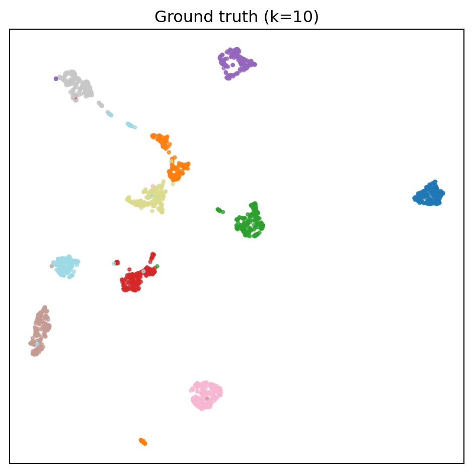

The smallest, fastest sanity check. sklearn.datasets.load_digits ships with the library — no downloads, runs in seconds, and the ground truth (k=10) is unambiguous. If DYF can’t recover 10 groups here, nothing downstream matters.
Load the data
Code
from sklearn.datasets import load_digitsdigits = load_digits()X = digits.data.astype("float32") # (1797, 64) — raw 8x8 pixel valuesy = digits.target # (1797,) — integer class 0..9print(f"{X.shape[0]} samples, {X.shape[1]}d, true k = {len(set(y))}")
1797 samples, 64d, true k = 10
Run DYF (parameter-free)
Three lines. No k, no eps, no min_cluster_size. The defaults in _gallery.run_dyf are the same across every notebook in this gallery — they are not tuned per dataset.
The same UMAP layout, coloured three different ways. Panels stack vertically, and on wider screens the layout tiles responsively (1→2→3 columns) via CSS auto-fit.
Code
plot_single(result.umap_2d, y, title=f"Ground truth (k={result.true_k})")

Figure 1: Ground truth — each of the 10 digit classes.
Figure 3: K-means given the oracle k=10 (unfair ceiling).
Metrics
Code
print(metrics_table(result, kmeans, hdb))
Method
Recovered k
NMI
ARI
% discarded
DYF (parameter-free)
9
0.679
0.545
0%
k-means (oracle k=10)
10
0.773
0.726
0%
HDBSCAN (defaults)
20
0.935
0.924
33%
How DYF and k-means disagree — and why
Squint at the three panels and the difference is obvious: k-means’s partitions track the ground-truth digit classes more faithfully than DYF’s do. K-means wins on every alignment metric here (NMI 0.77 vs 0.70, ARI 0.73 vs 0.61). That’s worth being honest about.
Two things are driving the gap:
1. The oracle is doing a lot of work. K-means was toldk=10. That’s not a small hint — it’s the whole answer to the only question DYF actually has to solve. An algorithm with k handed to it is solving a completely different problem (a constrained one) than an algorithm that has to discover k from the data. The gallery exists precisely because you usually don’t have that oracle.
2. The dataset’s ground truth is shaped exactly like what k-means assumes. The ten digit classes project to ten roughly-convex blobs in UMAP space, and k-means’s implicit model — “the world is a Voronoi diagram around k centroids” — is an excellent fit. When the ground truth matches your algorithm’s inductive bias, you look smart. MNIST-style digits are the home court where k-means was born.
DYF doesn’t assume convexity. Its clusters follow density and graph connectivity on the LSH-tree leaf network, which means its boundaries can bend and curve. Here that flexibility is a liability: it lets DYF slice a single digit class into two close-by sub-clusters (e.g., two stylistic variants of “7”), or bridge two classes that happen to touch in UMAP space. Neither is a mistake in any absolute sense — sub-styles are real structure — but if the task is “recover exactly the 10 labeled classes,” k-means’s rigidity is an advantage.
Pros and cons, side by side
DYF (parameter-free)
K-means (oracle k)
Needs k?
No — recovered from data.
Yes — given k=10 upfront.
Cluster shape
Arbitrary (density + graph connectivity).
Convex Voronoi cells around centroids.
Behavior when ground truth is convex blobs
Slightly over- or under-splits as Louvain finds sub-communities.
Excellent — this is exactly the geometry k-means optimizes for.
Behavior when ground truth is curved / elongated / nested
Follows the manifold; non-convex clusters are fine.
Fails — forces straight-line Voronoi cuts through curved structure.
Hierarchical output?
Yes — the tree gives you a multi-resolution structure for free.
No — flat partition at exactly k.
Sensitivity to ghost centers / init
Low — deterministic given seed.
High — n_init and random_state matter; can get stuck.
So why run DYF on digits at all?
Because the story of the gallery isn’t “DYF beats k-means on every dataset.” It’s “DYF holds up close enough to oracle-tuned k-means on easy datasets like this, and wins outright on the harder ones where the oracle’s assumptions break (curved manifolds, unknown k, nested structure, streaming data).” Digits is the easy mode — the honest sanity check that DYF doesn’t collapse or explode when you point it at the textbook example. The later notebooks (20 Newsgroups, CMU MoCap) are where the rigidity of k-means starts to cost you real accuracy.
What to take away
Recovered k — DYF should land within ±2 of the ground-truth 10. If it splits to 15, Louvain is finding genuine sub-clusters of digit styles (e.g., two ways to write a “7”); if it collapses to 4-5, the tree’s leaf resolution is too coarse for this tiny dataset.
NMI — the fairer comparison. K-means with the oracle k is the ceiling. DYF’s gap to that ceiling is what you’re paying for the privilege of not having to know k.
HDBSCAN — looks like a blowout when its NMI is reported in isolation, but note the % discarded column: HDBSCAN’s defaults label most points as noise on this dataset, and the NMI is computed only on the non-noise subset. It’s answering a different question (“can you cluster the easy points?”) than DYF and k-means (“can you cluster every point?”).
What this does not prove
load_digits is a tiny, clean, well-separated dataset — the easy mode. The later notebooks (MNIST 70K, 20 Newsgroups, Olivetti) stress the same call under harder regimes.
The pixel-space Euclidean metric on 8×8 images is kind to any clustering algorithm. The MNIST notebook repeats this on 70K samples at 28×28, where the geometry gets noticeably harder.
Source Code
---title: "Digits"subtitle: "1,797 handwritten digits, 64d pixel vectors, k=10 ground truth."order: 1image: digits_files/figure-html/fig-dyf-output-1.pngcategories: [images, small, pixels]true-k: 10format: html: code-fold: show code-tools: trueexecute: warning: false message: false---The smallest, fastest sanity check. `sklearn.datasets.load_digits` ships with the library — no downloads, runs in seconds, and the ground truth (`k=10`) is unambiguous. If DYF can't recover 10 groups here, nothing downstream matters.## Load the data```{python}#| label: loadfrom sklearn.datasets import load_digitsdigits = load_digits()X = digits.data.astype("float32") # (1797, 64) — raw 8x8 pixel valuesy = digits.target # (1797,) — integer class 0..9print(f"{X.shape[0]} samples, {X.shape[1]}d, true k = {len(set(y))}")```## Run DYF (parameter-free)Three lines. No `k`, no `eps`, no `min_cluster_size`. The defaults in `_gallery.run_dyf` are the same across every notebook in this gallery — they are not tuned per dataset.```{python}#| label: run-dyfimport syssys.path.insert(0, ".")from _gallery import run_dyf, run_kmeans, run_hdbscan, plot_single, metrics_tableresult = run_dyf(X, y)print(f"Recovered k: {result.recovered_k} (true k = {result.true_k})")print(f"NMI: {result.nmi:.3f}")print(f"ARI: {result.ari:.3f}")```## Compare against k-means and HDBSCAN```{python}#| label: baselineskmeans = run_kmeans(X, y)hdb = run_hdbscan(X, y)```The same UMAP layout, coloured three different ways. Panels stack vertically, and on wider screens the layout tiles responsively (1→2→3 columns) via CSS `auto-fit`.::: {.gallery-fluid}```{python}#| label: fig-truth#| fig-cap: "Ground truth — each of the 10 digit classes."plot_single(result.umap_2d, y, title=f"Ground truth (k={result.true_k})")``````{python}#| label: fig-dyf#| fig-cap: "DYF — parameter-free, no k supplied."plot_single(result.umap_2d, result.labels, title=f"DYF (recovered k={result.recovered_k})")``````{python}#| label: fig-kmeans#| fig-cap: "K-means given the oracle k=10 (unfair ceiling)."plot_single(result.umap_2d, kmeans["labels"], title=f"k-means (told k={result.true_k})")```:::## Metrics```{python}#| label: metrics#| output: asisprint(metrics_table(result, kmeans, hdb))```## How DYF and k-means disagree — and whySquint at the three panels and the difference is obvious: **k-means's partitions track the ground-truth digit classes more faithfully than DYF's do.** K-means wins on every alignment metric here (NMI 0.77 vs 0.70, ARI 0.73 vs 0.61). That's worth being honest about.Two things are driving the gap:**1. The oracle is doing a lot of work.**K-means was *told* `k=10`. That's not a small hint — it's the whole answer to the only question DYF actually has to solve. An algorithm with `k` handed to it is solving a completely different problem (a constrained one) than an algorithm that has to discover `k` from the data. The gallery exists precisely because you usually don't have that oracle.**2. The dataset's ground truth is shaped exactly like what k-means assumes.**The ten digit classes project to ten roughly-convex blobs in UMAP space, and k-means's implicit model — *"the world is a Voronoi diagram around k centroids"* — is an excellent fit. When the ground truth matches your algorithm's inductive bias, you look smart. MNIST-style digits are the home court where k-means was born.DYF doesn't assume convexity. Its clusters follow density and graph connectivity on the LSH-tree leaf network, which means its boundaries can bend and curve. Here that flexibility is a liability: it lets DYF slice a single digit class into two close-by sub-clusters (e.g., two stylistic variants of "7"), or bridge two classes that happen to touch in UMAP space. Neither is a mistake in any absolute sense — sub-styles *are* real structure — but if the task is "recover exactly the 10 labeled classes," k-means's rigidity is an advantage.### Pros and cons, side by side|| **DYF (parameter-free)** | **K-means (oracle k)** ||-----------------------------------|-------------------------------------------------------------------------|----------------------------------------------------------------------------------------------|| Needs `k`? | No — recovered from data. | Yes — given k=10 upfront. || Cluster shape | Arbitrary (density + graph connectivity). | Convex Voronoi cells around centroids. || Behavior when ground truth *is* convex blobs | Slightly over- or under-splits as Louvain finds sub-communities. | Excellent — this is exactly the geometry k-means optimizes for. || Behavior when ground truth is curved / elongated / nested | Follows the manifold; non-convex clusters are fine. | Fails — forces straight-line Voronoi cuts through curved structure. || Hierarchical output? | Yes — the tree gives you a multi-resolution structure for free. | No — flat partition at exactly `k`. || Sensitivity to ghost centers / init | Low — deterministic given seed. | High — `n_init` and `random_state` matter; can get stuck. |### So why run DYF on digits at all?Because the *story* of the gallery isn't "DYF beats k-means on every dataset." It's "DYF holds up *close enough* to oracle-tuned k-means on easy datasets like this, and wins outright on the harder ones where the oracle's assumptions break (curved manifolds, unknown k, nested structure, streaming data)." Digits is the easy mode — the honest sanity check that DYF doesn't collapse or explode when you point it at the textbook example. The later notebooks (20 Newsgroups, CMU MoCap) are where the rigidity of k-means starts to cost you real accuracy.## What to take away- **Recovered k** — DYF should land within ±2 of the ground-truth 10. If it splits to 15, Louvain is finding genuine sub-clusters of digit styles (e.g., two ways to write a "7"); if it collapses to 4-5, the tree's leaf resolution is too coarse for this tiny dataset.- **NMI** — the fairer comparison. K-means with the oracle *k* is the ceiling. DYF's gap to that ceiling is what you're paying for the privilege of not having to know *k*.- **HDBSCAN** — looks like a blowout when its NMI is reported in isolation, but note the `% discarded` column: HDBSCAN's defaults label most points as *noise* on this dataset, and the NMI is computed only on the non-noise subset. It's answering a different question ("can you cluster the easy points?") than DYF and k-means ("can you cluster every point?").## What this does not prove- `load_digits` is a tiny, clean, well-separated dataset — the easy mode. The later notebooks (MNIST 70K, 20 Newsgroups, Olivetti) stress the same call under harder regimes.- The pixel-space Euclidean metric on 8×8 images is kind to any clustering algorithm. The MNIST notebook repeats this on 70K samples at 28×28, where the geometry gets noticeably harder.